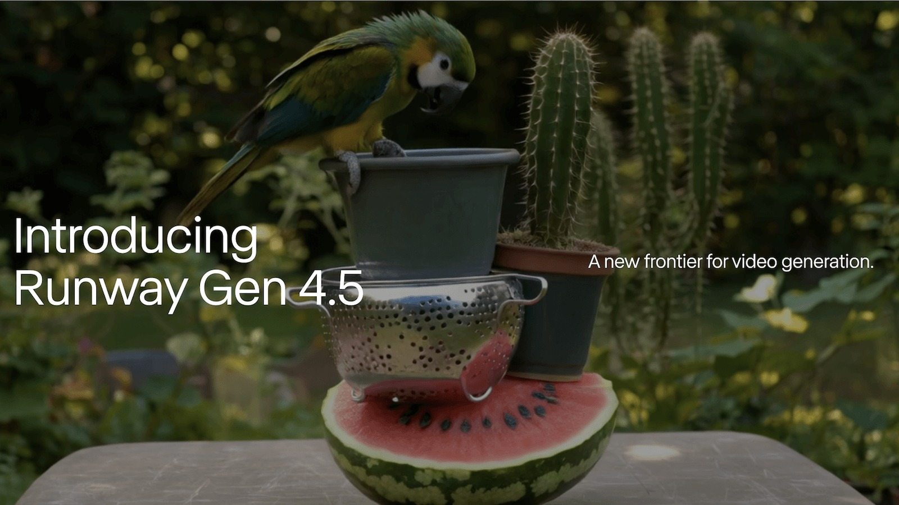

The video stack is becoming a workflow business, not just a model business
A full-source deep pass across frontier labs, creator tools, open video systems, and foreign-language signals. The strongest pattern is not merely better clips. It is stronger control, more complete audiovisual output, and the rise of routing layers that sit above the models.
Date / 2026-03-25
Scope / deep pass
Lens / AI filmmaking startup
Method / official pages, arXiv, GitHub

Runway’s Gen-4.5 launch image anchors the strongest direct quality-plus-control signal in this pass.
Executive summary
What matters right now
The important shift is upward in the stack. Labs are still improving generation quality, but the more decisive competitive moves are happening in control surfaces, audiovisual completeness, and the workflow shells that let creators steer, remix, and preserve identity across shots.
Highest-priority product signal
Runway still sets the bar for controllable cinematic generation
Gen-4.5 is the clearest “usable now” signal for motion quality, prompt adherence, temporal consistency, and professional control expectations.
Category shift
Video is becoming audiovisual by default
Google Veo and OpenAI Sora both make sound part of the core product story. Silent output increasingly looks incomplete unless it wins elsewhere.
Strategic shell
Adobe is positioning itself above the model wars
Firefly is being sold as a brand-safe, camera-aware, workflow-integrated hub that can route across multiple video engines.
Open-stack leverage
OSS video is operational enough to matter
FramePack, Wan2.1/VACE, HunyuanVideo, and ComfyUI together form a credible experimentation environment for long-form consistency, editing, and local iteration.
Frontier labs
The control race is more important than the benchmark race
Runway / video control
Gen-4.5 looks like the most filmmaker-relevant quality jump in this source set
Runway’s pitch is unusually aligned with real creative pain points: motion quality, prompt adherence, temporal consistency, physical accuracy, expressive characters, and continuity with existing control modes such as image-to-video, keyframes, and video-to-video.
Why it matters: this is the strongest direct signal that the premium end of AI video is converging on “revision-friendly cinematic control,” not just one-off wow shots.
For an AI filmmaking startup, Runway is still the cleanest benchmark for what a credible professional product surface should feel like.
Veo raises the bar by treating audio as part of the scene, not an afterthought
The current Veo page emphasizes native sound effects, ambience, dialogue, improved prompt following, and stronger realism/physics. That turns the competitive question from “who has the best-looking clip?” into “who gets creators closer to a finished scene in one pass?”
Why it matters: audiovisual generation changes the economics of previs, concept trailers, short-form storytelling, and ad ideation because it removes finishing steps.
Even if access is still constrained, the product direction is clear. Audio is migrating into the baseline expectation layer.
The interesting products are turning into orchestration layers
Adobe / workflow shell
Firefly is being positioned as the safe, controllable layer above multiple video models
Adobe’s video generator page matters because it is not only about Adobe’s own model. It explicitly sells camera-aware generation, commercially safe output, integration with adjacent audio and editing tools, and partner-model access including Veo, Sora, and Pika.
Why it matters: Adobe may capture practical usage not by owning every best model, but by owning the trusted workflow shell where teams do the work.
This is the clearest strategic reminder in the set that the monetizable layer may sit above the frontier labs.
If Adobe becomes the default orchestration shell, standalone products need a very sharp answer to why they exist: deeper control, a better identity layer, faster iteration, lower cost, or a more filmmaker-native UX.
Higgsfield / taste + routing
Higgsfield is becoming a cinematic identity layer with model-routing instincts
Its accessible surface mixes Cinema Studio 2.5, Soul Cinema, Soul ID, Soul Cast, editing tools, and visible paths into external engines such as Kling, MiniMax, Veo preview, and others. The blog copy adds a useful phrase: cinematic-grade visuals built with creative professionals and stronger character consistency when paired with Soul ID.
Why it matters: Higgsfield is less interesting as a single model vendor than as a taste-driven operating system for creators who want style, identity continuity, and access to the right engine in one place.
Taste, identity, and routing are converging into one product layer.
Research + open stack
The open ecosystem is now useful enough to shape product thinking
FramePack / long-form consistency
One of the most implementation-relevant video papers in the set
FramePack proposes context packing for next-frame prediction so inference cost remains invariant to video length, then adds explicit anti-drift mechanisms to fight long-horizon degradation. The accompanying repo is unusually practical and desktop-oriented.
This is not just academically interesting. It points straight at one of the hardest filmmaking bottlenecks: holding onto continuity as clips get longer.
Open-source video is getting much more operational.
Wan / foreign-language signal
Wan2.1 plus VACE is one of the strongest Chinese open-video signals to track closely
Wan2.1 spans text-to-video, image-to-video, video editing, text-to-image, video-to-audio, and smaller variants that can run on consumer hardware. VACE pushes in an even more important direction: unifying creation and editing tasks behind one conditioning interface.
Why it matters: creators do not think in isolated tabs like T2V vs I2V vs masked edit. A unified surface is closer to how real workflows behave.
Foreign-language watch signals are strongest when they carry real OSS leverage.
Hunyuan + ComfyUI / ecosystem compounding
HunyuanVideo and ComfyUI together show where advanced experimentation actually happens
Hunyuan’s repo is not just a base model release. It points to I2V, avatar animation, customization branches, diffusers integration, and community wrappers. ComfyUI remains the obvious control plane where those pieces become testable workflows instead of static repo bookmarks.
For startup research, this matters because it shortens the path from paper signal to practical experiment.